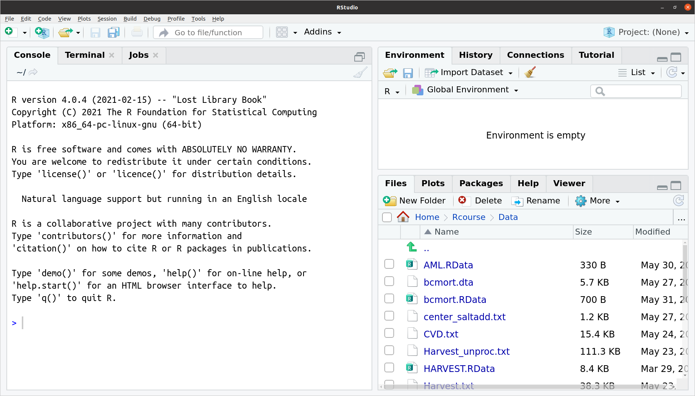
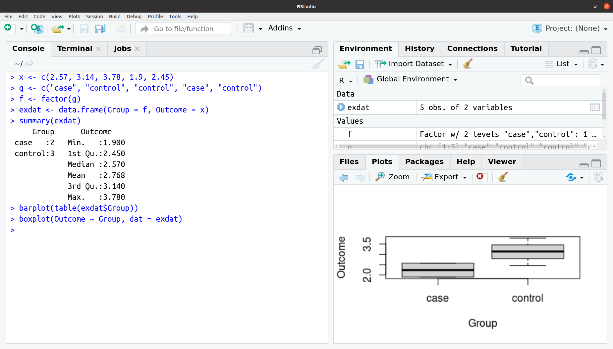
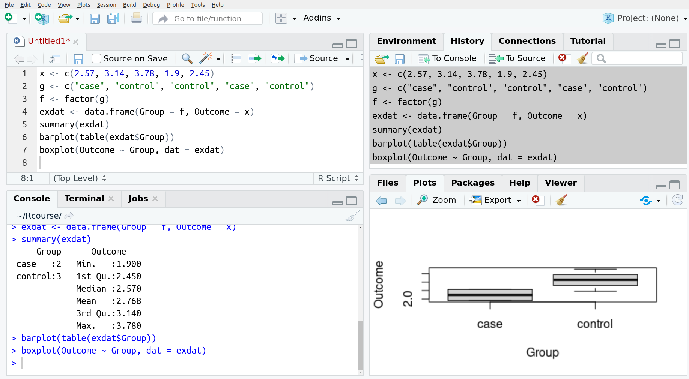

3 Working in RStudio
3.1 Getting started
The RStudio program window is typically split into up to four different quadrants or panes. The screenshot below shows a typical configuration with three panes:

The large pane to the left showing the R start-up message is the console. This is the main window, where the user types commands, and numerical results are displayed. The RStudio console is identical in function and appearance to the console window in R.
The smaller top right pane shows the Environment tab, which displays all currently defined objects (like data sets or analysis results) in the current R session. The screenshot shows RStudio at the start of a session, so no objects are defined yet, and the environment is empty.
In the bottom right panel, we see the Files tab, which lists the files in the current working directory. This pane works as an internal file browser, where the user can travel through the directory hierarchy on the hard disk and inspect and manipulate files.
Note that all three panes are tabbed, i.e. other functionality is available in separate tabs (like History on the top and Packages and Plots on the bottom).
3.2 A quick tour of the GUI
3.2.1 Console and friends
For all practical purposes, the RStudio console is identical to the R console. We can run the same commands as above to generate some example data and objects:
x <- c(2.57, 3.14, 3.78, 1.9, 2.45)
g <- c("case", "control", "control", "case", "control")
f <- factor(g)
exdat <- data.frame(Group = f, Outcome = x)
summary(exdat)
barplot(table(exdat$Group))
boxplot(Outcome ~ Group, dat = exdat)If you copy and paste these commands to the RStudio console, you will get something like the figure below:  The console looks as expected, with a mix of commands and results, you can still recycle previous commands through the arrow keys, and the tab-expansion for partially typed function names works as before (and even slightly better, as RStudio also displays some help information for the proposed function completions). So same old, same old.
Note how the panes to the right have changed:
in the upper pane, the Environment tab now lists the objects that have been generated, with a short description of each object (note that for the data frame
exdat, you can click on the icon before the name to get more information about the columns in the data frame);in the lower pane, the focus has shifted from the Files tab to the Plots tab, which displays the specified boxplot. Note that you can navigate between plots via the two arrow keys in the top left corner of the tab.
As there is not much space for the Plots tab, the actual plots may appear a little squished, depending on your screen size. You can get more space by either minimizing the top pane by clicking on the Minimize-icon in the upper right corner of the the upper pane, or the Maximize-icon in the lower pane; alternatively, you can click on the Zoom-button in the Plots tab to display a separate, generously sized window that displays the plots (and that can still be controlled from the Plots tab, e.g. for flipping through multiple plots).
This simple example outlines the interactive workflow in RStudio:
Data analysis is still done via commands in the console, with output displayed between commands.
Extra information that does not fit into the console, like plots or meta-information about available objects, is displayed in another pane in its own tab, with some extra GUI controls.
The user can arrange the panes such that they display the most relevant extra information for what they are doing in the console (zoom in on a plot, look closer at an object etc.)
Most of the tabs in the extra panes correspond to what we have called meta-activities previously - this is not an accident, and indeed a closer look below will clarify that all tabs provide support for connecting the console to other parts of the world, or at least the computer. We can still use the console to achieve the same effect, based on the functions previously described as well as others, at the price however of interrupting the main analysis flow.
3.2.2 RStudio Console specials
RStudio console works exactly as the R console with regard to commands, however, it has some convenient features which are only partially implemented in base R. The simplest one is auto-close for parentheses and strings: if you open a parenthesis, RStudio automatically adds the closing parenthesis, and puts the cursor in between for the next input. The same happens when you open a string, by typing either double or single quotation marks.
Then there is auto-complete: when typing at the prompt, RStudio will show you a context menu with the functions and data sets that match what you have typed so far, with some help text for the highlighted selection. You can scroll through the context menu with the arrow keys, and select an entry via hitting Enter or the Tab key. In the same way, if the cursor is between the parentheses after the function name, you get auto-complete for the arguments of the function, displaying a drop-down menu with the list of available arguments, plus some help text. This also works for the columns of a data frame, if you hit the Tab key after the $ sign for column extraction.
Additionally, there is also auto-complete for paths and file names: if the cursor is between a pair of matching quotes, single or double, and you hit the Tab key, RStudio will attempt to auto-complete the string with a matching directory- or file name. If the string is empty or not unique, RStudio will again show you a context menu for selection. This allows you to enter valid file names very quickly, even across nested sub-directories.
3.2.4 The default upper pane
Figure 3.1: Tabs in the upper right panel: Environment, Environment/Import, History
As outlined at the beginning, this tab displays the list of all currently defined objects, as well as some information about their type and content. Additionally, the whole collection of objects (the current workspace) can be saved via the disk icon in the tool bar to a file with extension .RData; a previously saved workspace file can be restored via the folder icon. Two interesting features about this save/restore mechanism are (1) restoring a saved workspace is additive: R will restore all objects from the workspace file, but it will not delete already defined objects in the current environment (however, if objects in the current workspace have the same names as objects in the workspace file, they will be overwritten with the file version); (2) if you look at the console after either saving or restoring a workspace, you see that although these activities are dialogue-based and triggered through the GUI, their effect is actually to run a save.image- or load command at the console, with the selected file as argument; so here RStudio is really only a thin icon-dialogue layer on top of the R console.
Additionally, the Environment tab offers two more activities:
via the brush icon, all currently defined objects can be deleted; this is clearly the nuclear option of object management, and should be handled with care.
Import Datasetoffers a drop down menu for importing different types of non-R data files, either from text format, Excel, or some statistics software. Clicking on any of these options starts a handy file selection- and option setting dialogue; as before, the actual activity is performed by running appropriate R code at the console, so these are kind of R-command builder dialogues.
displays the list of all commands that were used in the current session, plus any commands that were loaded at start-up from an .Rhistory file. Note that you can still cycle through previous commands in the console using arrow keys, just like Grandma, but the pane offers more comfort by showing multiple commands, allowing scrolling etc. Additionally, the command history can be saved or restored via the open folder/save to disk icons.
The History tab can be used to re-run commands, either individually or in blocks, by selecting one or several commands (by holding down the Shift- or Ctrl-key during selection) and clicking on the To Console button. For convenience, you can also edit the history by deleting one or several highlighted commands from the tab via the cross-out icon in the tool bar; this can be useful to e.g. remove incorrect commands with typos, or unnecessary excursions. The brush icon allows you to again to “brush away” all commands and to reset the command history to empty.
Importantly, commands selected as above can also be copied to a text file open in RStudio’s source code editor, the Source pane, by clicking on the To Source button. This is by far the easiest way of turning an interactive analysis in the console into a draft script file for editing and refinement, and will be discussed in more detail in Section 3.3.1 below.
Other tabs that appear by default in the upper pane are the Connections tab, which allows setting up connections to database servers (useful, but system specific) and Tutorial, which provides an introduction with focus on the tidyverse (see also Section 7).
3.2.5 The default lower pane
Figure 3.2: Tabs in the lower right panel: Files, Plots, Help
This tab offers a convenient GUI-driven way of interacting with the local file system. You can navigate to any directory accessible from your machine and list its content, either through clicking on directory names in the list or address bar, or by clicking on the three dots in the upper right corner, which opens an operating system file browser. Clicking on the R-symbol in the address bar will jump directly to the currently defined working directory.
The tool bar offers basic functionality for creating new folders, as well as deleting and renaming files and folders. The More-menu offers extra functionality for copying and moving files and folders, but also shortcuts for making the currently displayed directory the new working directory for R, or alternatively, to navigate directly to the current R working directory. Note that like other GUI-triggered activities that affect the state of the console, this last action will not be done in the background, but rather by running the appropriate setwd-command in the console, as we have seen above for loading workspaces.
By default, this tab shows the latest plot generated from the console. However, you can use the arrows at the right side of the tab tool bar to move between all plots generated in the current session - similar to the history tab, but for plots, and the cross-out icon and the brush icon have the corresponding effect of deleting either the currently displayed plot or all plots in the current session.
As mentioned before, the Zoom button in the tool bar opens a separate plotting window outside the RStudio application. This new window can then be moved and re-sized as necessary on its own, but is till locked to the plot currently displayed in the Plots tab - so actions like moving to the previous plot via the arrow keys there will have the same effect in the detached window. This functionality is especially useful for large and complex plots, which may not fit into the small tab window.
The Export drop-down menu allows manual export of the currently displayed plot from RStudio to either a file or the clipboard. The menu items support common file formats like .jpeg, .png and .itff, but also vector-based .svg as well as .pdf. Note that in the Save as Image and Copy to Clipboard, you can adjust the proportions (width and height) of the exported plot, and check the effect of the specified sizes via an Update Preview button.
This tab lists the currently installed add-on packages on your computer. Selecting a package in the tab via the checkbox in front of its name loads the package, i.e. it makes all the functions and data sets within the package available at the console. De-selecting a package in the tab unloads the package again, i.e. the extra commands & functions implemented in the package are no longer directly available at the command line.
The Packages tab also allows you to install packages that are not currently available on your computer from CRAN, the largest online repository of open-source add-on packages for R, simply via the Install button in the tab tool bar. Already installed packages can be updated via the Update button, which will check whether a newer version of the selected packages is currently online and allow you to install them if desired.
The difference between installation and loading is important for using R efficiently: packages need to be installed only once, at which point all files with the code, data and documentation that are part of a the package are stored on your local hard disk. However, only a small set of packages that provide crucial functionality for R are loaded automatically at start up, so that their functions become directly available at the console. Other, more specialized add-on packages need to be loaded once in every R session where you make use of them. So simply: install once - load frequently (and update occasionally).
Note that clicking on the name of the package in the tab list directly jumpt to its main help page, which leads us neatly to the next tab.
This tab offers access to the same help system as in plain R, but integrated into the application window (however, if you prefer a separate help window, you can click the window-arrow icon next to the search bar). As expected, the arrow keys in the tab tool bar offer navigation between already visited help pages, and the house icon moves to the top level of the help system.
Note that the tab offers two search bars: the top bar is for searching among all documented data sets and functions in the help system, whole the lower one is only for searching for text in the currently displayed help page (these can get long).
3.3 Source pane & scripting
3.3.1 From console to source
We now want to turn our interactive analysis in the console into a script that we can save and re-use as we please. For that, we return to the History tab, where we select all commands from our initial toy example. In this situation, clicking on To Source then has several effects: RSTudio will
- open a new text file,
- copy the selected commands from the history tab to that new file,
- display the new text file in the
Sourcepane, the so-far missing fourth pane in the RStudio GUI.
The resulting configuration should then look something like the figure below. 
This is a first step away from our interactive, console-only workflow so far. By turning our analysis into a script that lives outside of R/RStudio, we have a record of our analysis that can be edited, commented, shared, de-bugged, re-run, modified, criticized, put under version control etc. This turns messing with data into actual data analysis. More will be said on this subject, starting with the extended example in Section 4.
3.3.2 The Source pane file editor
Before we carry on, we should really save the currently still untitled file under a suitable name, to actually generate that permanent record. Saving the file with extension .R makes it easier to display and re-run, so e.g. ExampleScript.R will do here.
The Source pane works as a standard text editor, where you can add, delete and modify the commands copied from the console, search and replace text etc. However, the Source pane is also tightly integrated with the console: to start with, when typing in the Source pane, we have the same auto-close and auto-complete support for functions, arguments etc. as at the console.
And second, we can select parts or all of the code in the Source pane and directly send it to the console to be run. The Source pane toolbar offers a couple of icons and a drop-down menu for this, but I strongly encourage you to use the correct keyboard shortcut right from the start: press Control+Enter at the same time, and the current line, or the currently highlighted section of the script file will be sent to the console. This enables a rapid workflow that combines the advantages of working at the console with building a record of the analysis.
3.3.3 Displays
The Source pane can also be used in other ways:
you can directly open a new script file via the menu File/New/R Script instead going through the History tab &
To Source;you can open and edit any kind of text file in the Source pane, not just script files, by simply by clicking on the corresponding name in the Files tab;
RStudio also uses the Source pane to display some read-only information, e.g. the content of a a data frame when you click on it in the Environment tab.
The Source pane has an additional extremely useful feature available through the the Compile report icon or the shortcut Ctrl-Shift-K, which makes it extremely easy to turn a script into a draft report, and which is demonstrated in Section @ref(exp_res).